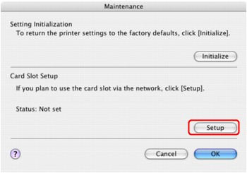

Confirming Whether the Card Slot is Mounted
Confirming Whether the Card Slot is Mounted
 Mounting the Card Slot as the Network Drive
Mounting the Card Slot as the Network Drive
 Restrictions on Card Slot Use over a Network
Restrictions on Card Slot Use over a Network
Confirming Whether the Card Slot is Mounted
The Card Slot must be mounted to use it over a network.
When the Card Slot is mounted, the following icon appears on the desktop. (If you are using Mac OS X v.10.6.x, the icon appears in the Computer window on the Go menu of Finder.)
-
In Mac OS X v.10.6.x or Mac OS X v.10.5.x:
If these icons are not found, the network drive for the Card Slot is not mounted yet. For details on how to mount the Card Slot, see Cannot Mount the Card Slot.
-
In Mac OS X v.10.4.11:
If these icons are not found, the network drive for the Card Slot is not mounted yet. Mount the Card Slot as the network drive using IJ Network Tool.
Mounting the Card Slot as the Network Drive
In Mac OS X v.10.4.11, you can mount the Card Slot as the network drive using IJ Network Tool.
-
Insert a memory card into the Card Slot of the machine.
-
Start up IJ Network Tool.
-
Select the printer in Printers.
-
Select Maintenance on the Settings menu.
-
Click Setup.
 -
Confirm that the icon for the Card Slot appears on the desktop.
 Note
Note-
If the Card Slot cannot be mounted properly, see Cannot Mount the Card Slot.
-
Restrictions on Card Slot Use over a Network
-
You cannot write data to a memory card in the Card Slot over a network. You can only read data from a memory card.
-
Using the Card Slot over a network is supported by Mac OS X v.10.6.x, Mac OS X v.10.5.x, and Mac OS X v.10.4.11.
-
In Mac OS X v.10.6.x or Mac OS X v.10.5.x, you cannot mount the Card Slot as the network drive using IJ Network Tool or access to the Card Slot using MP Navigator EX over a network.
-
The Card Slot can be shared by multiple computers, if the machine is connected to a network. Multiple computers can read files from a memory card in the Card Slot at the same time.
-
If your computer joins a domain, the Card Slot may not be mounted as the network drive.
-
If you use the memory card stored the large size files or many files, a large amount of card access may be generated. In this case, the operation in the memory card may be impossible or slow. Operate after the Access lamp of the machine is lit.
-
When you access the network drive for the Card Slot over the network, file names consisting of eight or less lowercase letters (not including its extension) may be shown in uppercase.
For example, a file name such as "abcdefg.doc" will be "ABCDEFG.DOC", while a name such as "AbcdeFG.doc" will appear the same.
The file is not actually renamed, but merely appears to be changed. -
Select Not writable from PC in Read/write attribute under Device user settings of the machine to read files from a memory card over a network.
Note-
If the following occurs when using the network drive for the Card Slot over a network, see Cannot Use the Card Slot.
-
Cannot access the Card Slot after the network setup of the Card Slot is complete
-
The Card Slot is disconnected
-
-